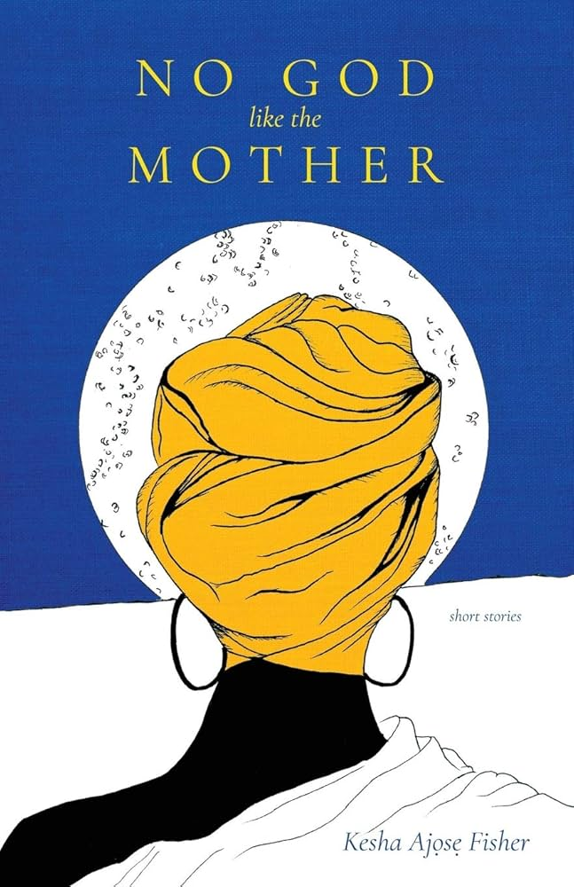

Winner of the 2020 Oregon Book Award for fiction, Kesha Ajose Fisher’s No God Like the Mother is a series of short stories that follow various women and girls at different stages of their lives and explore how these different characters are forced to grapple with precarious positions in which they find themselves. Ajose Fisher’s nine stories span many different locations, from Lagos, Nigeria, to Paris, France and Portland, Oregon, that cover topics from motherhood, migration, loss, cultural identity, and the tensions created by distance. The book emphasizes the importance of hope despite the pain and uncertainty that life may bring.
At first glance, it may be challenging to immediately notice how No God Like the Mother can be linked to Oregon literature, since many of the stories in the collection take place outside of the state. As each story unfolds however, it becomes clear how setting plays an integral part in shaping the emotional lives of Ajose Fisher’s characters. “Sleep,” the second story in the collection, set exclusively in Portland, Oregon, follows the character Marley, a mother grieving over the disappearance of her son. The story uses Portland in interesting ways that reflect Marley’s emotional state through her descriptions of setting at the beginning and end of the story. In Marley’s initial remarks about the rainy environment that she and her children occupy as they wait for the school bus, Ajose Fisher uses a somewhat ubiquitous descriptor of the Oregon environment. This description of setting, however, conveys the varying levels of presence Marley is capable of occupying, an ability that she is then incapable of due to the loss of her son. Marley attends therapy sessions to discuss her son’s disappearance, and they try to find ways that Marley can better cope with her grief and address her dependence on substances that allow Marley to avoid sleep, the accompanying dreams of her son. Her dependencies have inhibited her ability to remain present not only in her surroundings but also for her spouse and young daughter. Portland is a complicated place in the story, as it becomes a source of alienation but is also the place Marley knows best. In the therapy session, Marley’s doctor asks whether she’s ever considered taking a trip to Africa to experience a new culture, but Marley rejects the idea claiming, “I just have no interest. I don't know the culture. I don’t know that I want to start learning now” (21). Her response emphasizes the role Portland plays in shaping Marley’s sense of identity and belonging. Marley also recalls instances of discrimination she experiences living in Portland, noting the strange looks she and her spouse receive from others in the city for being an interracial couple. Though, it is also implied that people around the city look at them with awareness of their son’s disappearance, further altering the way her family is perceived.
“Sleep” ends with the beginnings of hope that her son will eventually return, and this hope is expressed again through the description of setting. Marley imagines her son returning home and sitting beside her. “The sun spreads its arm across the auburn forest outside my window. My son is beside me. There, my daughter waits. I read Gulliver’s Travels to my children and watch as they play with Legos for as long as they want” (27). The description of the setting in this instance suggests that Marley is beginning to find a willingness to connect with the world again. Portland, despite its attachments to grief and isolation, becomes a place where she can feel connected to her son and continue hoping for his return.
This story’s main themes of familial loss and tensions between geographical separation and personal connection are a constant throughline across the collection. Many of Ajose Fisher’s stories focus on members of the Nigerian diaspora who are pulled between their memories of home, connection to their families, and their own lives in other parts of the world. These overlapping, often conflicting emotions of loss, disconnection, and newness are all reflected in the ways that characters understand and portray their various settings.
Kesha Ajose Fisher was born in Chicago and was raised in Lagos, Nigeria, as well as Texas and California. She currently resides in Portland, Oregon. She is a longtime vocal advocate for social justice causes and for African immigrants and refugees. Her debut collection, No God like the Mother, won an Oregon Book Award in 2020, and she has won other awards for her writing, like the Phoenix Literary Magazine’s Editor’s Choice Award for Short Fiction in both 2011 and 2012.
Heidi W. Durrow, The Girl Who Fell from the Sky (2010)
- Young adult novel about a biracial girl who moves to Portland.
Emmet Wheatfal, Our Scarlet Blue Wounds (2019)
- Poetry collection by an African American Portland author.
